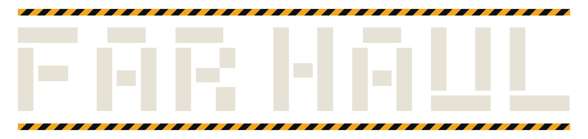
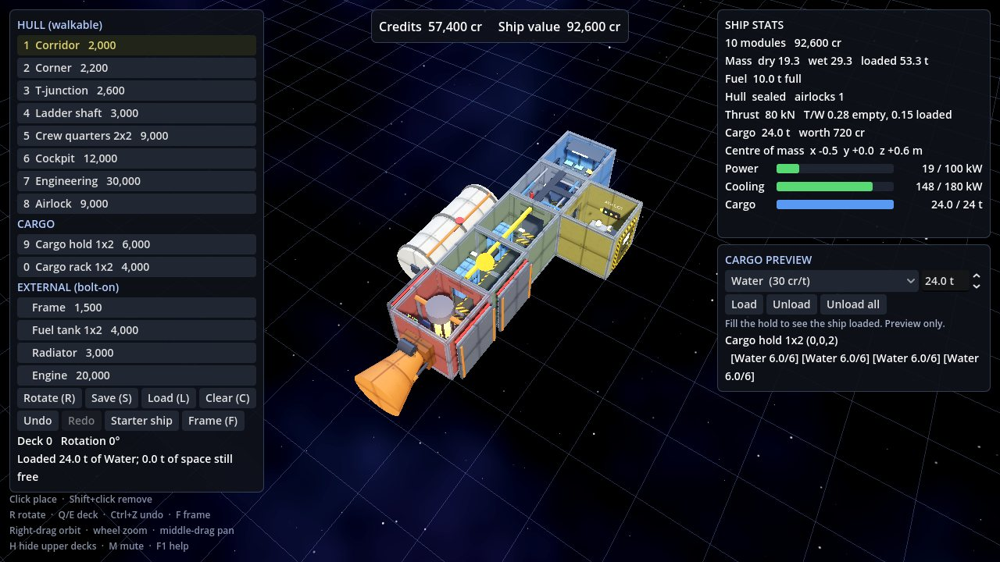

Build your ship. Haul the freight. Push the frontier.
Far Haul is a first-person freight, ship-building and exploration game. You own a small, secondhand ship, take contracts, and move goods between worlds. This page shows what you can play today and what is still to come.
Runs in your browser with no install. About 10 MB on the first load. Works best on a laptop or desktop with a mouse.
- Version
- 0.1.0, ship builder prototype
- You can
- Start a game, save in five slots, build and name a ship at your world's yard
- Not yet
- Flying, walking the ship, planets, space walks

The game, and where it is today
Far Haul is about owning a working spaceship. The ship is a place you walk through, and freight is how you pay for it.
You start as an independent operator with a cheap ship and enough money to keep it flying. You take contracts, load containers, work out whether a job is worth the fuel, and run goods between established worlds. Over time you build bigger, buy range, and head out past the end of the charts, where there is no repair yard, no fuel depot and nobody to call. The farther you go, the less is there to help you.
What exists right now is the first piece: the shipyard. You can design a ship from modules, check that it works, fill it with cargo and send it on a delivery. Everything after that is still on the drawing board.
Build order
- Ship builderPlayable now
- FlightFly it from the cockpit
- Walking insideCockpit to engineering on foot
- Landing and exploringFlat procedural planets first
- Tethered space walksRepair the outside
Area by area
| Area | What the game will be | Today | Status |
|---|---|---|---|
| Ship building | Ships assembled from physical modules: cockpit, hull, cargo holds, tanks, engines, radiators. Every compartment exists in the world. Balance, power, heat and thrust all matter. | A 3 m grid builder with 13 parts. Parts snap together at doors and mounts. Live checks for sealed hull, airlock, power, cooling, thrust-to-weight and centre of mass. Undo, redo, autosave. | Playable |
| Menus, saves and the dock | A proper start: pick who you are and where you begin, keep several games, and always return to the last place you stood. | New game with name, species, difficulty and starting system, taken from the known-space data. Five save slots. A dock at your starting system's yard, with the shipyard opening from it. Settings are placeholders. Species gives no bonuses. | Playable |
| Known space | Eighteen systems from the five home worlds out to the last settlement at Lastlight, joined by trade routes and named corridors. Every place needs something from somewhere else. | The setting is written as data: five species, eighteen systems, nineteen routes and the corridors between them. The new game screen reads it for species and starting systems. Nothing else uses it yet. | Rough |
| Interiors | Cramped, practical, lived-in. Cabins, galleys, engine rooms and cockpits that look like they were built to do a job. | Each part has its own fitted interior: cockpit seats and controls, a reactor room, crew quarters with bunks and a galley, an airlock with suit lockers. You can see them from the builder camera. | Rough |
| Freight and contracts | Cargo in standard containers, with real mass, value and handling needs. Demand that follows what each place makes and uses. | Not in the builder, which is design only. The rules for five placeholder contracts exist in the code, but nothing in the game uses them yet. The builder has a cargo preview so you can see a loaded ship. | Planned |
| Flying | Fly from the pilot seat. Fuel, range and an off-centre thrust line that costs manoeuvring propellant. | You cannot fly yet. | Planned |
| Walking the ship | Leave the seat and walk the corridors while underway. A longer ship means a longer walk to engineering. | The interiors are modelled and furnished, but there is no first-person view yet. | Planned |
| Landing and exploring | Land on rocky worlds and moons, then explore by ship, rover and on foot. | Nothing yet. Flat procedural terrain comes first. | Planned |
| Space walks and repair | Go out through the airlock on a tether to fix radiators, engines and hull damage. | Airlocks exist and the builder checks for one. Nothing outside the hull yet. | Planned |
| Living economy | Freight demand that comes from what places produce and need. Frontier outposts that grow because you supplied them. | Nothing yet. | Planned |
| Manufacturers and wear | Parts from companies with recognisable engineering habits. Components wear and fail where you can see it. | One generic part for each job. | Planned |
| Crew, passengers, salvage, combat | People who live aboard, wrecks worth boarding, and danger that is a cost to avoid rather than the main event. | None of these yet. | Planned |
Screenshots
All taken from the game itself. Select any image to see it full size.
Help
You start with a ready-made hauler and 110,000 to 220,000 credits, depending on difficulty. Change it, check it, name it, save it.
Your first ship
- Press Launch game, then New game. Pick a name, race, difficulty, starting world and save slot, then Begin. Later, use Continue or Load game to return.
- You arrive at the dock. Press Enter shipyard to open the ship builder.
- Look at the ship. Click a part in the palette on the left, then click next to the ship to place it. Green means it fits. Red tells you why not.
- Watch the power, cooling and cargo meters and the warnings on the right. Each warning says what is missing.
- Use Cargo preview to fill the hold and see the ship loaded. This only changes how the ship looks and weighs. It does not buy or sell anything.
- Type a name in Ship name. Press S to save. Your game also autosaves. Leave shipyard (Esc) saves and takes you back to the dock.
What makes a ship valid
- A cockpit to fly from.
- At least one engine pointing aft.
- A sealed hull. Cyan rings mark doorways that open onto space; cap them with a module.
- An airlock, so the crew can get in and out.
- Enough power for everything that draws it.
- Enough cooling for the heat you make.
- Enough thrust for the loaded weight. The stats panel shows thrust-to-weight empty and loaded.
Controls
| Place a part | Left click |
|---|---|
| Remove a part | Shift + Left click |
| Rotate the part | R |
| Choose a part | 1 to 9, 0, [ ], or click it |
| Build deck down or up | Q / E |
| Undo and redo | Ctrl + Z / Ctrl + Y |
| Orbit the camera | Right-drag |
| Zoom | Mouse wheel |
| Pan | Middle-drag |
| Frame the whole ship | F |
| Hide the decks above | H |
| Save, clear | S, C |
| Leave the shipyard | Esc |
| Mute sound | M |
| Show the help text | F1 |
Questions
Where is my ship saved?
In this browser, automatically, every time you change something. Clearing your browser's site data erases it. Another browser or device starts fresh, because saves are not shared between them yet.
I cannot place a part. Why?
Move the cursor over the ship and read the red message under it. The usual reasons are overlapping another module, no matching door or mount on the neighbouring part, or not enough credits.
Why does the builder have no contracts?
The builder is only for designing the ship. Parts cost credits from your starting funds, but contracts and payment belong to the game itself, which comes after flight is built. The cargo preview is there so you can see and weigh a loaded ship.
There is no sound.
Browsers block audio until you click the page once. Click anywhere in the game. Press M to check that sound is not muted.
It runs slowly.
The game uses the simplest rendering mode so that it works on integrated graphics, but a browser still adds overhead. Close other tabs, make the window smaller, or press H to hide decks you are not working on.
Does it work on a phone or tablet?
Not properly yet. The builder expects a mouse and keyboard. Touch controls are not built.
Can I fly the ship?
Not yet. Flight is the next stage after the builder.
About Far Haul
A game about owning a spacecraft and being free to go somewhere.
Not a magical ship, and not a legendary warship. A machine you designed, paid for, patched together, overloaded and eventually know well enough to hear when something is wrong. There is no chosen hero and no galaxy to save. There is always another shipment, another settlement, and another star past the edge of the chart.
What it is built around
- Function over formShips are boxes, frames, tanks, engines and radiators. A strange-looking ship that obeys the engineering is a perfectly good ship.
- The ship is the placeEvery compartment is a real room. Cockpit, hold and engine room all exist, and walking between them takes time.
- Freight is the economyCivilisation needs things moved. You earn by moving them, and what you earn becomes a better ship.
- The frontier gets thinPast the core worlds there is less help. Eventually there is no repair yard, no fuel depot, and no rescue.
Known space
Humans, Kesh, Ilyan, Vey and Orun each have a home system and an engineering tradition. Trade has mixed them for generations, so a Kesh captain at a human-built terminal is ordinary. Your species shapes where you come from, not what you can do. The core is crowded and well supplied. Further out there are fewer ports, fewer repairs and less rescue, until Lastlight, where ordinary commerce runs out.
- Humans
- Sol. Modular, repairable, improvised. Many makers and standards.
- Kesh
- Keshar. Heavy, redundant, very durable. High gravity.
- Ilyan
- Ilos. Light, efficient, precise. Low gravity, great engines.
- Vey
- Veyara. Water, life support and biotechnology. Semi-aquatic.
- Orun
- Orun. Compact, accessible machinery and thermal control. Communal and underground.
The prototype
- Version
- 0.1.0, ship builder prototype
- Built with
- Godot 4.4, written in GDScript. Runs in the browser through the Compatibility renderer.
- Art and sound
- Made in code: the textures, sky, sounds and logo are generated. The intro video is a placeholder.
- Placeholders
- Prices, part stats and the intro video will all change.
- Source
- github.com/benjaminarthurt/FarHaul